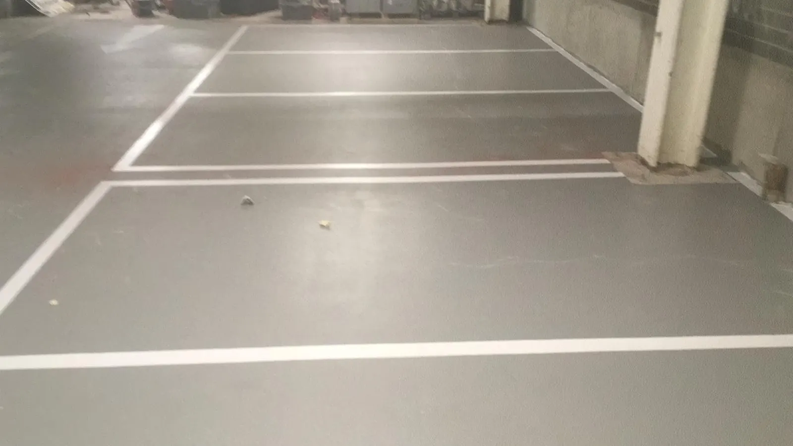
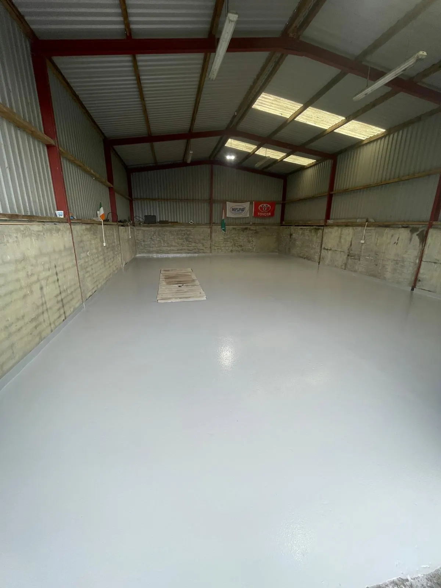
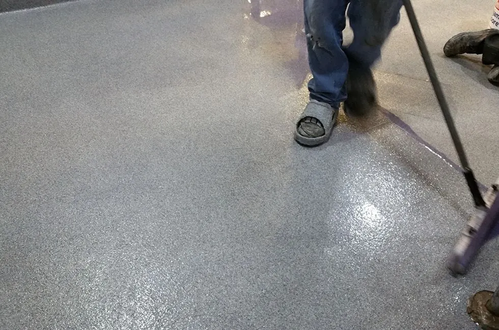
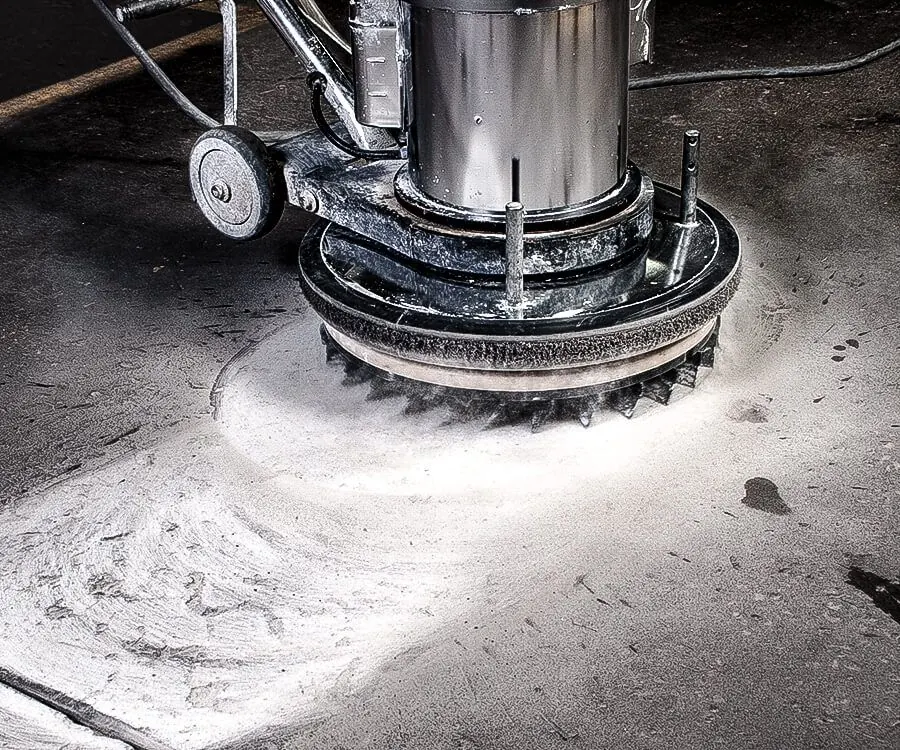

Resin flooring cost in Ireland
Typical prices per m² for epoxy, PU and MMA floors, what drives the cost, and how to compare quotes.
Read the guide“Epoxy floor paint” from a builders’ merchant and a professionally laid resin floor can sound like the same thing. They aren’t. One is a thin decorative coat; the other is a hard-wearing floor system several times thicker, bonded into prepared concrete. Here’s how they compare, and when floor paint is actually fine.

Floor paint is a thin coat that changes the colour of the concrete and keeps dust down. A resin floor is a proper wearing surface, usually two-part epoxy, polyurethane or MMA, laid much thicker over mechanically prepared concrete. In a busy commercial or industrial space, paint lasts months. A resin floor lasts years.
| Floor paint | Resin floor | |
|---|---|---|
| What it is | Usually a one-pack or thin water-based “epoxy” paint | Two-part industrial resin system, laid as a coating or screed |
| Thickness | About 0.05–0.1 mm per coat | About 0.3 mm for coatings, up to 9 mm for screeds |
| Preparation | Often just swept and cleaned | Shot-blasted or diamond ground, cracks repaired, moisture tested |
| Forklifts and pallet trucks | Wears through quickly in traffic lanes | Built for it |
| Hot tyres | Often lifts where vehicles park (“hot tyre pick-up”) | Resists it |
| Chemicals and oils | Limited | Good to excellent, depending on the system |
| Anti-slip | Limited options | Graded anti-slip aggregate built in |
| Typical life in a busy area | Months to a couple of years | Many years, with occasional topcoats |
| Upfront cost | Low | Higher. See our cost guide |
Want a straight answer for your floor? Send us the rough size, what the area is used for and a few photos, and we’ll come back with advice and a price.
Almost every peeling floor we’re called out to has the same story: the paint was rolled onto concrete that was only swept or washed. Concrete has a weak, dusty top layer (called laitance), and paint stuck to it lifts as soon as it’s put under load. Add damp coming up through the slab, oil in the concrete, or hot tyres, and it fails faster.
A resin floor avoids this with mechanical preparation: shot-blasting or grinding removes the weak layer and opens up the surface so the primer soaks in and bonds to sound concrete. That step, more than the product, is what makes the difference.
Paint isn’t always the wrong choice. It’s reasonable for:
Even then, it lasts much longer if the floor is properly cleaned, degreased and ideally ground first.
If any of those apply, paint will keep failing, and repainting every year usually costs more over time than doing it once properly. See which resin system suits your site.
No. Most “epoxy floor paint” sold in shops is a thin, often water-based coating with a small amount of epoxy in it. Industrial epoxy flooring is a two-part system laid many times thicker over prepared concrete. They’re priced and perform very differently.
Not directly. Paint is the weak link, so it has to come off first. We remove it by shot-blasting or grinding back to sound concrete, then lay the resin system.
Paint is very thin and usually wears through to bare concrete in traffic lanes, or peels in flakes. Resin is noticeably thicker, wears more slowly and tends to chip at edges rather than peel. Send us a few photos and we’ll tell you.
If the area gets vehicles, water, chemicals or food, usually yes, because paint will need redoing again and again. For a lightly used store room, paint may be enough.
Tell us about your floor and we’ll come back to you with advice and a quote. We’re fully insured and work on sites of every size, anywhere in Ireland.

Typical prices per m² for epoxy, PU and MMA floors, what drives the cost, and how to compare quotes.
Read the guide
How the three main resin systems compare on strength, heat, chemicals, cure time and cost.
Read the guide
Typical install times, when you can walk and drive on the floor, and how to keep downtime short.
Read the guide